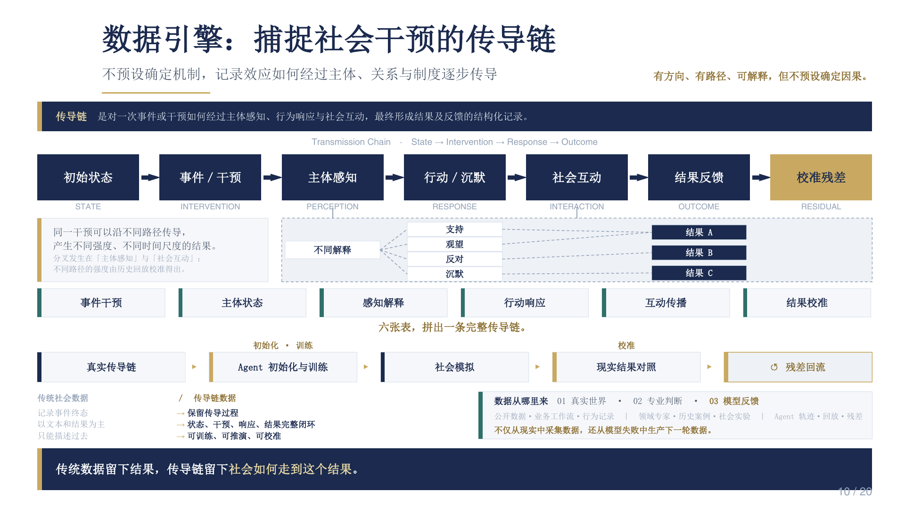

ABSClaw
面向复杂社会系统的大规模智能体仿真基础设施，研究智能体组织、并行调度、状态管理与实验复现。 Infrastructure for large-scale agent-based social simulation, including orchestration, parallel scheduling, state management, and reproducibility.
把理论假设转化为可运行、可观察和可复现的计算实验。系统不是研究结果的包装，而是检验社会机制、生成高质量数据和连接现实反馈的实验装置。 We turn theoretical assumptions into runnable, observable, and reproducible experiments. Systems are instruments for testing mechanisms, generating data, and connecting real-world feedback.
实验闭环 Experimental loop
通过数据融合感知社会状态，借助多智能体系统复现传播与互动过程，再将模拟结果与现实观测对齐，迭代模型假设。 Data fusion estimates social states, multi-agent systems reproduce interaction and diffusion, and observations calibrate the resulting model hypotheses.

Data engine
Record how an intervention travels through perception, behavior, interaction, and feedback without assuming a fixed causal mechanism in advance.
建设方向 Systems agenda
以下名称代表正在推进或规划中的研究模块。具体开源范围、版本与合作方式将随项目进展更新。 The following modules are in progress or planned. Open-source scope, versions, and collaboration details will be updated as the work develops.
面向复杂社会系统的大规模智能体仿真基础设施，研究智能体组织、并行调度、状态管理与实验复现。 Infrastructure for large-scale agent-based social simulation, including orchestration, parallel scheduling, state management, and reproducibility.
连接状态表征、动力学模型、反事实实验和现实校准的统一研究流程。 A unified workflow connecting state representation, dynamics, counterfactual experiments, and calibration.
沉淀主体轨迹、互动链、机制标注与环境反馈，建立数据质量、版本管理和评测规范。 Agent trajectories, interaction chains, mechanism labels, environmental feedback, quality control, versioning, and evaluation.
评估行为真实性、机制一致性、宏观涌现、跨场景泛化和不确定性表达。 Evaluating behavioral realism, mechanism consistency, emergence, cross-context generalization, and uncertainty.
面向政策与治理问题的可审计计算实验环境，记录假设、干预、结果和风险边界。 An auditable environment for policy and governance experiments, documenting assumptions, interventions, results, and risk boundaries.
研究数据确权、授权、路由、审计与高质量数据集运营，为社会数据协作提供基础能力。 Tools for data authorization, routing, audit, and high-quality dataset operations in collaborative social data settings.
技术栈 Research stack
课题组将围绕完整实验生命周期建设工具，而非只优化单一模型指标。 The group builds for the full experimental lifecycle rather than optimizing a single model metric.
现实观测、合成轨迹、机制标注与版本治理。 Observation, synthetic trajectories, labels, versioning.
认知、记忆、关系、偏好、资源与制度约束。 Cognition, memory, relations, preferences, constraints.
网络、事件、规则、组织和多尺度社会场景。 Networks, events, rules, organizations, social contexts.
基线、干预、对照、反事实与敏感性分析。 Baselines, interventions, controls, counterfactuals.
微观行为、宏观统计、机制一致性与风险审计。 Micro behavior, macro statistics, mechanisms, risk audit.
可复现性 Reproducibility
我们计划为公开项目提供清晰的模型卡、数据说明、实验配置、评估协议和版本记录；涉及现实数据时，优先满足隐私、授权与合规要求。 Public projects will aim to provide model cards, data statements, experiment configurations, evaluation protocols, and version histories, with privacy and authorization taking priority for real-world data.
说明能力、训练来源、适用范围和失败模式。 Capabilities, provenance, scope, and failure modes.
记录来源、处理流程、偏差和授权边界。 Sources, processing, biases, and authorization.
保留参数、随机种子、环境与运行记录。 Parameters, seeds, environments, and run logs.
同时评估拟合、机制、泛化和社会风险。 Fit, mechanisms, generalization, and social risk.
算法、系统、数据、复杂网络与社会科学背景都可以找到明确的研究切口。 There are concrete entry points for backgrounds in algorithms, systems, data, complex networks, and social science.